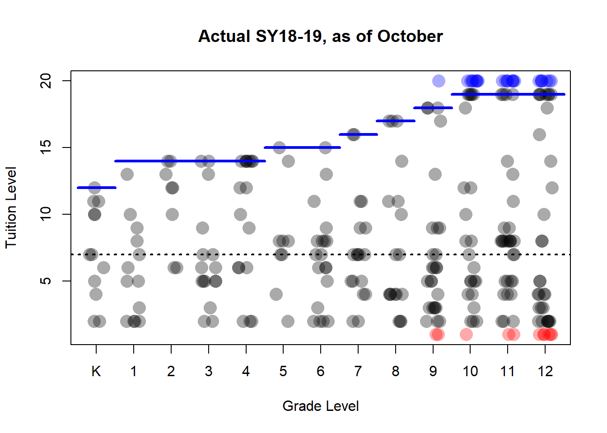
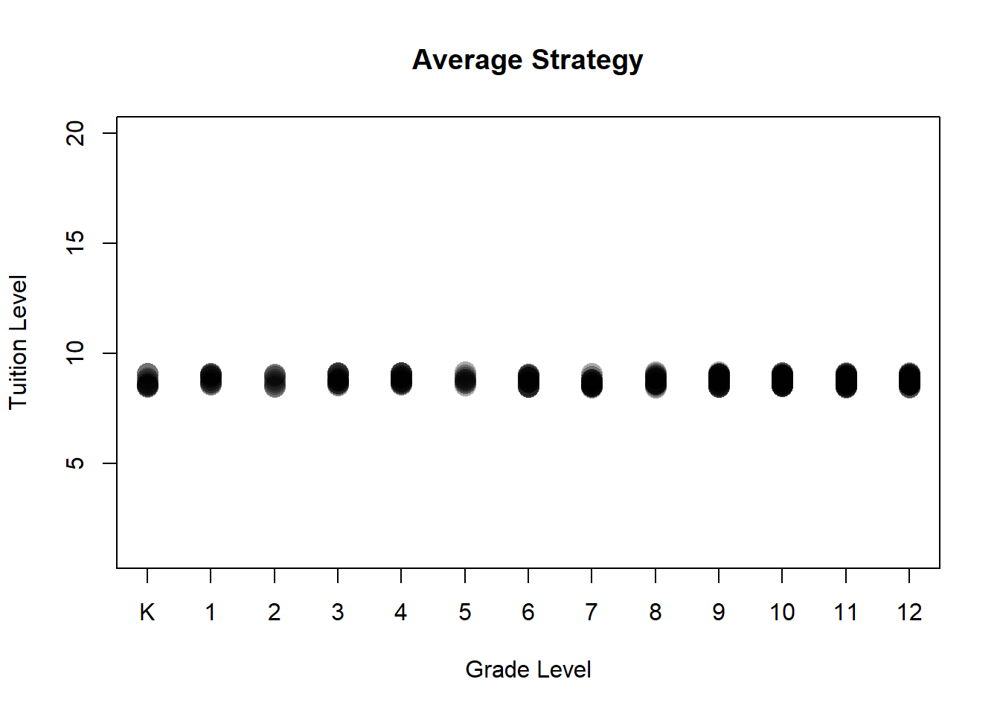
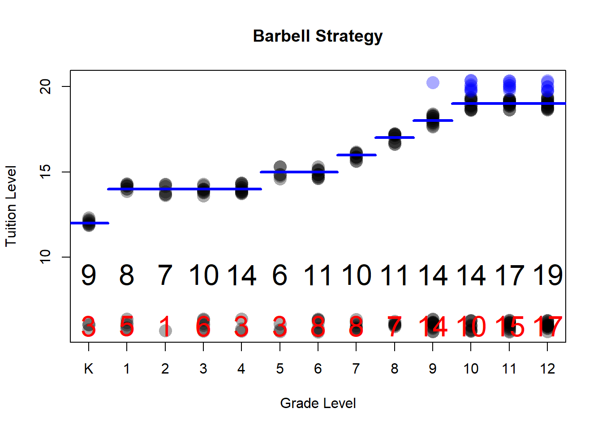

This is based on Carol’s matrix for SY2018-2019. First some validation numbers to make sure we have the data input in a sensible way. Tuition levels here are coded as numbers 1 through 20. These levels correspond to price brackets (we know the levels). It would be better to work from exact numbers. Based on this data sheet, some numbers to check to see if our abstraction makes sense. These numbers do not account for vacancies, they do account for faculty/staff tuition remission. The numbers do not account for inability to collect on contracts.
Total Tuition Explained
## [1] 3599887Number of Students
## [1] 274Enrollment by Grade Distribution
##
## K 1 2 3 4 5 6 7 8 9 10 11 12
## 12 13 8 16 17 9 19 18 18 29 32 40 43Here’s a simple scatter plot with a little jitter around the categorical levels so you can see them stack up. There’s a little transparency that lets you see overlapping dots. Blue here are your international students. Red are the tuition levels being removed next year. The blue lines are the maximum tuition levels. The jitter moves the values around a bit. You can see the “barbell effect” as you advance in grades.

The median tuition is at about the 8th level or $11,000-11,999 (closer to the upper limit at 8.8). The dotted line reflects this level.
Actual matrix below for your notes.
##
## K 1 2 3 4 5 6 7 8 9 10 11 12
## ToBeEliminated<6000 0 0 0 0 0 0 0 0 0 2 1 2 6
## <6000 2 4 0 2 3 1 4 2 3 3 3 3 7
## 6000 - 6999 0 1 0 1 0 0 1 0 0 5 1 0 3
## 7000 - 7999 1 0 0 0 0 1 0 2 6 1 2 3 4
## 8000 - 8999 1 2 0 5 0 0 1 3 0 3 4 4 2
## 9000 - 9999 1 1 2 2 3 0 3 0 0 4 1 0 0
## 10000 - 10999 2 1 0 2 0 2 2 5 2 2 1 2 0
## 11000 - 11999 0 1 0 0 0 3 4 0 0 0 2 9 2
## 12000 - 12999 0 1 0 1 1 0 1 2 0 3 0 2 0
## 13000 - 13999 2 1 1 0 1 0 0 0 1 0 1 0 1
## 14000 - 14999 2 0 0 0 0 0 1 2 2 0 0 1 0
## 15000 - 15999 1 0 2 0 2 0 0 0 0 0 2 0 1
## 16000 - 16999 0 1 1 1 0 0 1 0 0 1 0 1 0
## 17000 - 17999 0 0 2 2 7 1 0 0 1 0 0 1 1
## 18000 - 18999 0 0 0 0 0 1 1 0 0 0 0 0 0
## 19000 - 19999 0 0 0 0 0 0 0 2 0 0 0 0 1
## 20000 - 20999 0 0 0 0 0 0 0 0 3 1 0 0 0
## 21000 - 21999 0 0 0 0 0 0 0 0 0 3 1 0 1
## 22000 - 22999 0 0 0 0 0 0 0 0 0 0 5 4 7
## 30000 - 32999 0 0 0 0 0 0 0 0 0 1 8 8 7The optimization problem in front of us is to balance several factors * Total tuition receivable * Enrollment numbers by grade * The difficulty in filling the seats * An implicit model about financial diversity
For example, consider the following solutions on the next tabs.
First, we could just set the tuition to the across the board average.

Then by construction, the metrics before are similar.
Total Tuition Explained
## [1] 3599887Number of Students
## [1] 274Enrollment by Grade Distribution
##
## K 1 2 3 4 5 6 7 8 9 10 11 12
## 12 13 8 16 17 9 19 18 18 29 32 40 43Run through standard concerns. * There’s no structural reason it couldn’t be set this way: kindergarten market price is $15,000 which is higher than the set average.
* Can you find these students? Probably given that you can fill seats at full price. * The main downfall is abrogating any interest in economic diversity.
Assume per grade you give out slots for max tuition rate until you fill the class quota. Number of remaining seats?
## target intl domestic TuitionCap AllSeats DomSeats IntlSeat FullPayNeeded ZeroPay
## K 129995 0 129995 15640 12 12 0 9 3
## 1 121496 0 121496 17100 13 13 0 8 5
## 2 114996 0 114996 17100 8 8 0 7 1
## 3 164993 0 164993 17100 16 16 0 10 6
## 4 225993 0 225993 17100 17 17 0 14 3
## 5 104996 0 104996 18170 9 9 0 6 3
## 6 196492 0 196492 18580 19 19 0 11 8
## 7 197992 0 197992 19890 18 18 0 10 8
## 8 205492 0 205492 20440 18 18 0 11 7
## 9 324988 31500 293488 21770 29 28 1 14 14
## 10 552986 251996 300990 22870 32 24 8 14 10
## 11 626482 251996 374486 22870 40 32 8 17 15
## 12 632985 220496 412488 22870 43 36 7 19 17Okay check our work

Total Tuition Explained
## [1] 3749080Number of Students
## [1] 274Enrollment by Grade Distribution
##
## K 1 2 3 4 5 6 7 8 9 10 11 12
## 12 13 8 16 17 9 19 18 18 29 32 40 43Numbers on the plot give the exact number of students required (black) and number of free slots open (red). Can you hit this in practice? Well it looks like the school is very far off. Just to recap: you probably couldn’t fully fund the school with full pay students. This means the argument that sets full pay and tuition discounted students in opposition is a fallacy. One might recast this narrative by recognizing that the fact that most of the students pay something (and we can’t find this full pay market) is what keeps tuition working. A different corollary is that the zero pay student number here is roughly the number of vacancies the system could take and break even at the same revenue.
## FullPayNeeded ZeroPay ActualFull PropFull
## K 9 3 1 0.11
## 1 8 5 0 0.00
## 2 7 1 2 0.29
## 3 10 6 2 0.20
## 4 14 3 7 0.50
## 5 6 3 1 0.17
## 6 11 8 1 0.09
## 7 10 8 2 0.20
## 8 11 7 3 0.27
## 9 14 14 3 0.21
## 10 14 10 5 0.36
## 11 17 15 3 0.18
## 12 19 17 7 0.37Now in practice, there aren’t really that many zero-pay students so really, “students paying anything” is what lets us relax the upper bound on the tuition.
It’s unlikely we can drive enrollment assuming we can fill a large order for full pay students. Further it is unrealistic to fully ignore the contribution of students who pay less than full tuition and more than zero. On the other extreme, the average model does not meet our need for financial diversity. Whether the model could be deployed is not settled: one could object that there just aren’t enough families in the area to pay the average tuition for all contracts (to be determined with actual numbers, please). It is likely our final models will try to find the sweet spot where we can deviate from the average model in equal measure to fill seats.
Suppose now we go back and consdier the average tuition required in a grade if we had the same number of full pay students in each level.
## ActualFull Intl Seats RevRemaining AvgReq
## K 1 0 11 114355 10396
## 1 0 0 13 121496 9346
## 2 2 0 6 80796 13466
## 3 2 0 14 130793 9342
## 4 7 0 10 106293 10629
## 5 1 0 8 86826 10853
## 6 1 0 18 177912 9884
## 7 2 0 16 158212 9888
## 8 3 0 15 144172 9612
## 9 3 1 25 228178 9127
## 10 5 8 19 186640 9823
## 11 3 8 29 305876 10547
## 12 7 7 29 252398 8703Not for Distribution. 2018.